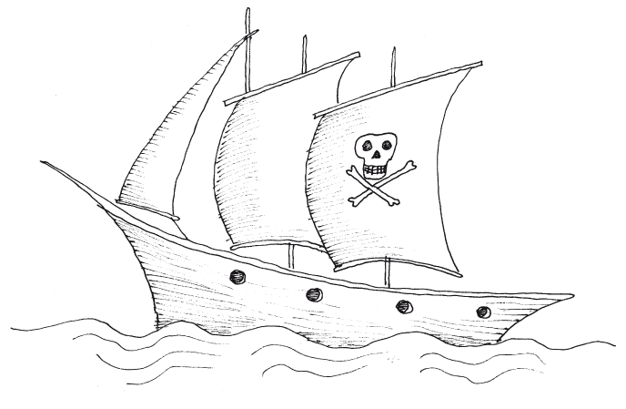
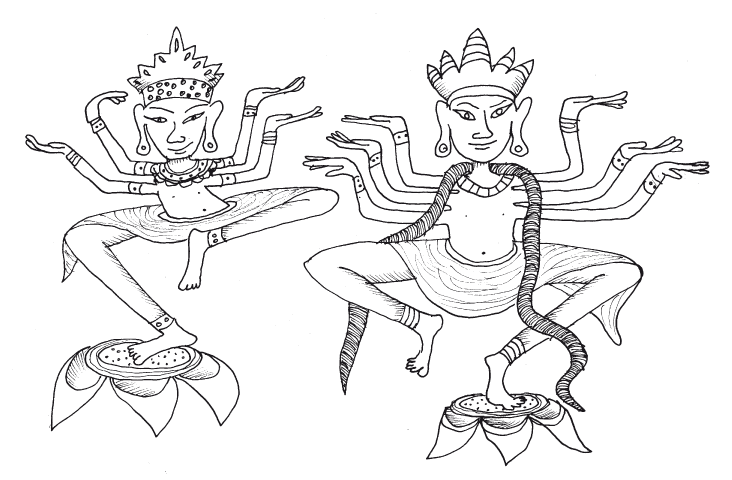
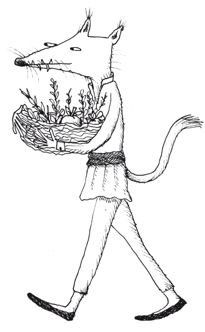
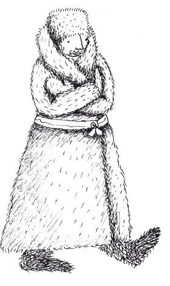
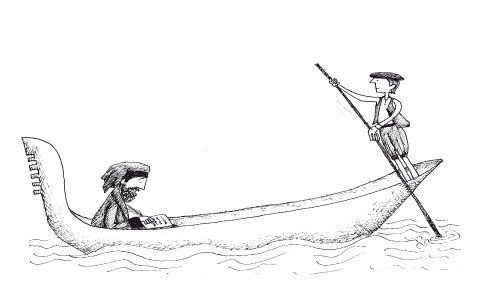

Después de haber escrito de tantos reinos, comarcas y provincias, ahora comenzaré a relatar sobre las cosas maravillosas que se encuentran en la India, a describir su tierra y las costumbres de sus gentes. Hablaré de las muchísimas islas que hay en el mar Océano, situadas al oriente de las regiones que ya hemos recorrido. Y, para comenzar, hablaré de la primera de estas islas y que se llama Cipango.
Cipango es una isla al oriente en alta mar, que se encuentra a mil quinientas millas de la costa de Mangí y de tierra firme. Es de una extensión grande en extremo y sus habitantes son de tez blanca y de linda figura, y son muy amables. Son idólatras y tienen rey, pero no son súbditos de nadie más. Allí se encuentra oro en grandísima abundancia, pero ninguno lo saca fuera de la isla, por lo que pocos mercaderes arriban allí y rara vez llegan a sus puertos naves de otras regiones. Es maravillosa la cantidad de oro que allí uno puede encontrar, hasta el extremo que sus habitantes no saben qué hacer con tanto oro.
Como esto es verdad, contaré sobre el magnífico palacio que posee el Señor de esta isla. Se trata de un gran palacio techado con placas de oro muy fino, tal como en nuestras tierras se recubren de plomo las iglesias. Hay tanto oro y de tan buen valor que es imposible contar su cantidad, y nadie en todo el mundo podría adquirirlo. También contaré que las ventanas de ese palacio están todas recubiertas de oro, y el piso de las salas y de muchas habitaciones es también de oro, y tiene más de dos dedos de grosor. Es tan magnífico y desmesurado el valor de este palacio que nadie podría calcularlo. Tienen además muchísimas perlas redondas y gruesas y de color rojo, que en precio y valor superan a las perlas blancas. También hay muchas piedras preciosas, por lo que la isla de Cipango es rica a maravilla.
Y fue precisamente al prestar oídos a los mercaderes que le narraban las riquezas de Cipango, que el Gran Kublai Khan, quien todavía reina, quiso conquistar y someter estas tierras a sus dominios. Pero, después de una gran batalla, los ejércitos del Gran Khan se vieron derrotados sin poder tomar la isla. Así ocurrió y fue verdad, pero dejaré de hablar de esto y seguiré con el tema de nuestro libro.
Los lectores de este libro han de saber que todos los ídolos de la región de Catai, de la región de Mangí, y de estas islas de la India, son muy parecidos, aunque a veces son distintos entre unas y otras regiones. En el caso de esta isla de Cipango hay muchos ídolos que tienen cabeza de buey, otros cabeza de cerdo y otros de carnero, perro y aún otros de diversos animales. También hay algunos ídolos que tienen cuatro caras en una sola cabeza; hay otros que tienen tres cabezas, una sobre el cuello y otras dos a cada lado de los hombros; algunos, en fin, tienen cuatro manos, otros diez, otros cien; y el ídolo que tiene mil manos se le considera el mejor y el que tiene más poder. Cuando se les pregunta a los habitantes de Cipango por qué los ídolos son tan diferentes entre sí, por lo general responden que así lo han transmitido sus antepasados, y que así ellos quieren transmitirlo a sus hijos y practicar y creer lo mismo que siguieron sus antepasados, de generación en generación.

No quiero mencionar nada en cuanto a lo que se refiere a los ritos de estos idólatras, pues son cosas tan extrañas y con tanta intervención de los demonios que no quiero relatarlos en este libro, pues tendría que relatar cosas horripilantes y abominables para los oídos de los cristianos. Por esta razón dejaré aparte todo lo que respecta a estas costumbres y cambiaré de tema.
El mar donde está la isla de Cipango se llama mar de Cin, que qujiere decir “el mar que está al frente de Mangí”, ya que la provincia de Mangí está en su costa. En el mar donde está Cipango hay otras muchísimas islas, y es un mar tan amplio que los marineros y pilotos que navegan por aquella región dicen haber contado siete mil cuatrocientas cuarenta y ocho islas, la mayor parte de las cuales está poblada por hombres. En todas estas islas los árboles son de unas especias que dan muchos y suaves perfumes, pues allí no crece ningún arbusto que no sea muy aromático y provechoso, así como muchos otros árboles más útiles que los bosques de áloe.
Hay también infinitas especias, y entre estas una pimienta blanquísima como la nieve, y muchísmima abundancia de la negra. Esta pimienta blanca no crece en ningún otro lugar del mundo. Tienen estas islas mucha cantidad de oro y es incalculable la cantidad de mercancías preciosas que poseen. Sin embargo, los mercaderes de otras partes rara vez navegan por allí, pues pasan un año completo en el mar, ya que van en invierno y vuelven en verano. Sólo dos vientos reinan en aquel mar, uno en invierno y otro en verano. También está esta región muy distante de las costas de la India.
Pero ahora ya no interesa seguir hablando de aquellas regiones ni de aquellas islas, pues están demasiado lejos y, como yo, Marco Polo, no estuve allí, concluyo en este punto mi narración y retomo el itinerario.
Después de navegar a lo largo de un golfo que se llama Cheynam se llega a la comarca de Ciambá. Esta es una tierra muy grande y muy rica, tiene su propia lengua y su propio rey y todos sus habitantes siguen la idolatría. Ahora contaré algo digno de mencionarse, pues en el año del Señor de 1278 el Gran Kublai Khan envió a uno de sus príncipes con un gran ejército para someter aquella comarca a su dominio, pero no pudo tomar ni ciudades ni castillos. No obstante, como este ejército devastaba su tierra alrededor, el rey de Ciambá prometió pagar un tributo anual al Gran Khan si aceptaba dejarlo en paz. Después de llegar a un acuerdo, el ejército del Gran Khan se retiró de sus tierras y el monarca de Ciambá le envía todos los años veinte elefantes muy hermosos al Gran Khan. Yo, Marco Polo, estuve allí en esta provincia en el año 1285, y me encontré a este rey anciano que tenía trescientos veintisiete hijos entre varones y mujeres. Encontré también en esta región muchísimos elefantes y áloe en grandísima abundancia, así como también bosques de una madera negra y muy hermosa llamada bonus, con la que sus habitantes elaboran hermosísimas figuras de ajedrez, como muchos otros objetos.
Dejando atrás la provincia de Ciambá, y después de navegar mil quinientas millas, se llega a una enorme isla llamada Java, y que es la mayor isla que existe en todo el mundo según afirman los marineros, quienes lo saben por experiencia propia, pues esta isla tiene de circunferencia tres mil millas. En esta isla hay un rey que no paga tributos a nadie. Toda la isla es de una gran riqueza y hay extraordinaria abundancia de pimienta, nuez moscada, clavo y otras valiosas especias. Acuden a ella muchos mercaderes, ya que obtienen grandes ganancias, pues los tesoros y las riquezas que se encuentran allí nadie las podría imaginar. Pero ya he hablado suficiente de esta tierra, la dejaré atrás y seguiré adelante para hablar ahora de la isla de Java la Menor.
No crean los lectores que se trata de una isla muy pequeña, pues tiene dos mil millas de circunferencia. Hay en esta isla ochos reinos y yo, Marco Polo, estuve en seis: Ferlec, Basmán, Sumatra, Dragoián, Lambrí y Fausur. Cada uno tiene su propio rey y tienen también lengua propia. Todos los habitantes son idólatras, y hay abundancia de toda clase de especias, de las que nunca se ha visto nada igual en todo el mundo. Ahora contaré algo extraño que sucede en el reino de Basmán, que limita con el reino de Ferlec. Sus habitantes dicen que son súbditos del Gran Khan, pero la verdad es que no pagan tributos, pues los mensajeros del Gran Señor nunca alcanzan a llegar hasta allá. Sin embargo, estos habitantes le envían al rey los regalos más extraños, tales como elefantes y unicornios y sobre todo unas aves rapaces negras. Tienen gran cantidad de elefantes salvajes y unicornios, más pequeños que los elefantes. Estos unicornios tienen la piel como de búfalos y las pezuñas como las de los elefantes, con un gran cuerno de color negro en mitad de la frente. Sin embargo, no atacan a la gente con el cuerno sino con la lengua y las patas, pues tienen en la lengua unas espinas largas y afiladas. Llevan la cabeza siempre baja y son bestias de aspecto horrible. Estos animales no se parecen en nada a los unicornios de los que hablan las leyendas en nuestras tierras, y lo cierto es que se comportan de manera muy distinta a lo que nosotros creemos.
Ahora, después de hablar de aquel reino de Basmán, hablaré del siguiente reino que se llama Sumatra. En ese reino permanecí yo, Marco Polo, durante cinco meses con mis compañeros, porque el tiempo era favorable para la navegación. Mandé construir allí una fortaleza de madera con empalizadas y rodeada de fosos profundos, por temor de aquellas gentes bestiales que devoran a los otros humanos.
Tienen los mejores peces del mundo y poseen unos árboles pequeños que se parecen a las palmas y de los que sacan un vino de muy buen sabor. En una determinada época del año hacen una incisión en las ramas y atan en cada tronco una jarra. Este líquido fluye con tanta abundancia, que entre el día y la noche se llena la jarra atada a la rama. Usan este líquido como vino y lo cosechan en gran cantidad; además es tan medicinal que cura a los hidrópicos y a los que sufren de tos o de melancolía. Tienen también otro licor semejante al vino, un líquido azucarado que extraen de unas nueces de India tan grandes como una cabeza humana, que tienen en el centro una parte carnosa y fresca, y este es el líquido que siempre beben aquellas gentes.
Pero ahora que ya hablé de este reino, cambiaré de asunto para hablar algunas cosas extrañas que encontré en otro reino llamado Lambrí.
Hay allí muchas especias valiosísimas y otra cosa extraordinaria que ahora contaré. En aquel reino hay unos hombres que, a pesar de no tener pelo en el cuerpo, les crecen unas colas como a los perros, y tienen un palmo de longitud. Hay allí muchos de estos hombres que viven muy lejos, y no habitan en las ciudades sino en las montañas. Hay también muchos unicornios y otros animales extraños.

Después de viajar hacia el occidente se encuentra otra isla, grande y muy rica, llamada Angamán. Tampoco hay allí ningún rey y sus habitantes son idólatras y sucede allí algo extraordinario, que es muy importante que aparezca escrito en este libro. Pues es la verdad cuando cuento que todos los habitantes de esta isla tienen cabezas, y ojos y dientes de perro, y los lectores no deben dudar de lo que digo, pues puedo asegurar que sus cabezas son en todo iguales a las de los grandes perros. Tienen allí muchas especias, y se alimentan de arroz, sorgo y leche, así como de todo tipo de carne. Hay también las llamadas nueces del faraón, manzanas del Paraíso y muchos otros frutos muy distintos a los de nuestras tierras. Pero ya que he hablado de este extraño pueblo, hablaré de otra isla llamada Ceilán.
Después de navegar otras mil millas en dirección occidente se llega a la isla de Ceilán, la más grande del mundo, pues tiene unas dos mil cuatrocientas millas de circunferencia. Sin embargo, en la antigüedad había sido mayor, ya que, como es común en aquellas regiones, su perímetro alcanzaba las tres mil seiscientas millas. Pero sopló tantas veces un fuerte viento sobre la isla y a lo largo de muchos años, con tanto ímpetu y tanta fuerza, que se derrumbaron buen número de acantilados, y mucho territorio de la isla se perdió bajo el mar.
Una cosa extraordinaria de esta isla es que se encuentran las piedras preciosas más extraordinarias que llamamos rubíes, y nada igual se encuentra en ninguna otra parte del mundo. Tienen allí también muchos zafiros, topacios, amatistas y muchas otras piedras preciosas. Y puedo asegurar sin mentir que su rey posee el más bello rubí que jamás se haya visto en el mundo y que no creo se pueda ver otro igual, pues es de un palmo de longitud y es tan grueso como el brazo de un hombre. Es la joya más maravillosa que haya existido y es resplandeciente y carece de toda impureza, de modo que parece un fuego ardiente.
Cuando el Gran Kublai Khan se enteró de la existencia de este rubí, envió sus mensajeros ante el rey para pedirle que le entregase la maravillosa joya, y que si la entregaba estaba dispuesto a darle el precio de una ciudad. Pero el rey de Ceilán respondió que la piedra era de sus antepasados y que no la daría jamás a ningún hombre.
Con esta respuesta, los embajadores regresaron donde Kublai Khan y yo, Marco Polo, era uno de aquellos. Y puedo asegurar que vi con mis propios ojos aquel rubí. Como no hay ninguna otra cosa digna de contar en este reino, hablaré de una provincia llamada Maabar.
La gran provincia de Maabar se llama también India la Mayor. No es una isla, sino tierra firme, y los lectores de este libro han de saber que es la tierra más noble y rica que exista en todo el mundo, y lo digo sin mentir. En su reino hay las perlas más grandes y de la mejor calidad como ninguna otra. Han de saber también que frente a tierra firme y otra isla hay un golfo donde obtienen las perlas, pero donde hay unos peces enormes que pueden devorar a los pescadores de perlas.
Pero estos evitan el peligro de la manera como relataré. Los pescadores llevan consigo a unos magos llamados brahmanes, quienes por medio de hechizos y encantos hipnotizan a estos inmensos peces, de tal forma que no pueden hacer ningún daño a los pescadores. Como la pesca de las perlas es sólo durante el día, estos magos hacen sus encantamientos sólo por este tiempo y el hechizo se rompe al llegar la oscuridad. Y han de saber también que estos brahmanes pueden encantar cualquier clase de animal, ave o animal terrestre. Y así es como pueden pescar estas maravillosas perlas que le dan abundante riqueza a este reino.
Contaré otra cosa de este reino que es una maravilla. Aquí adoran a los ídolos y en la mayor parte adoran al buey, pues aseguran sus habitantes que este animal es un ser benéfico, porque trabaja la tierra y hace crecer las cosechas. Por esta razón, nunca intentarían comer carne de buey ni matarlo. Hay otra costumbre en estos reinos y es que tanto el rey como sus príncipes se sientan directamente sobre la tierra. Si alguno les pregunta por qué lo hacen así, responden que así se acomodan mejor y que la tierra es algo honorable, ya que de la tierra fuimos hechos y a la tierra vamos a regresar, y por esta razón todo el mundo debe honrarla y nadie debe despreciarla.
Hay también entre los habitantes de estas comarcas muchos que son expertos en un arte llamado fisonomía, que enseña a conocer a mujeres y hombres por las características de sus rasgos y sus cualidades, de tal forma que ellos saben de inmediato si se encuentran frente a una buena o mala persona. Conocen además el significado de cualquier encuentro con un pájaro y de todos los augurios, sabiendo siempre si sucederá algo bueno o malo. Por ejemplo, si un viajero escucha en su camino que alguien ronca o estornuda, debe detenerse de inmediato. Si el otro vuelve a estornudar, el viajero considera que es buena señal y sigue el camino. Si, por el contrario, el extraño no estornuda el caminante lo entiende como mal agüero y regresa de inmediato a su casa, abandonando el viaje.
Yendo más allá del reino de Maabar se encuentra, a mil millas de distancia, el reino de Mutifilí, que no es tributario de nadie, y lo gobierna una sabia reina. Sus habitantes se nutren de carne, leche y arroz y son idólatras. En algunas montañas de este reino hay abundancia de diamantes y ahora contaré cómo los consiguen.
Si hay lluvia, los hombres se acercan a los torrentes por los que baja el agua de las sierras, y cuando el agua desaparece escarban la arena y hallan muchos diamantes. Pero cuando llega el verano, cuando no hay ni una gota de agua, durante los mayores calores los consiguen de la siguiente manera: los buscadores suben a la cima de las montañas donde hay muchos diamantes. Pero lo hacen con enormes penalidades, a causa del asfixiante calor que allí reina, y también debido a las grandes serpientes, que en aquel lugar hay en cantidades infinitas, y son tan gruesas que cuando los buscadores van allí lo hacen con miedo, y muchas veces son devorados por estas. Debo agregar que estas serpientes son tan venenosas que nadie se atreve a llegar hasta sus nidos, pues parecería que están allí para proteger los diamantes.
Ahora contaré de la otra forma de obtener estos diamantes. En aquellos valles abruptos hay también abundancia de águilas blancas que anidan en las sierras y que se alimentan de las serpientes. Por lo tanto, aquellos que quieren alcanzar los diamantes arrojan al fondo de estos riscos trozos de carne mojados en sangre. En cuanto cae allí, la carne queda adherida a los diamantes. Cuando las águilas ven la carne al fondo de los valles la agarran y la llevan a otro lugar, sujeta entre sus garras. Entonces, los que vigilan las águilas corren allá donde se han posado, si el lugar es accesible, y las ahuyentan y con frecuencia encuentran varios diamantes adheridos a estos trozos de carne.
Ya los lectores han escuchado de las maneras que tienen de encontrar aquellos diamantes. Y han de saber también que estas piedras sólo se encuentran en este reino, sin que sea posible para ninguno encontrarlas en otra parte.
Ahora que ya he terminado de hablar de todo esto, parto de nuevo para seguir adelante con este libro, y describiré las cosas que llevan a cabo los Brahmanes, que es lo que describiré a continuación.
Lo primero que diré es que los Brahmanes son los hombres más honestos, pues abominan la mentira, y por nada del mundo dirían una falsedad, aún a riesgo de perder la vida. Son también muy castos, no se sirven vino ni carne, no matan ningún animal, y no llevan a cabo ninguna cosa que consideren como pecado. Son idólatras y observan todos los augurios. Así, por ejemplo, cuando quieren comprar algo, miden primero su propia sombra al sol y según las reglas de la superstición cierran o no el trato. Son muy parcos al comer y hacen grandes ayunos. Son muy sanos, y tienen las dentaduras hermosas pues acostumbran a masticar una hierba que los ayuda a la digestión y a todas las funciones del cuerpo. Hay entre ellos unos monjes llamados ciugui, que observan una vida durísima, por devoción a los ídolos, y pueden vivir entre ciento cincuenta y doscientos años. La salud la encuentran por la gran abstinencia en la comida y la bebida. Van totalmente desnudos y no se cubren parte alguna del cuerpo. Adoran el buey. Y cada uno lleva una piel de buey o una pequeña imagen en cobre de este animal ceñida a la frente. No comen sobre hojas verdes ni tampoco se alimentan de frutos verdes o de hierbas verdes o de raíces verdes, ya que aseguran que todo lo que es verde tiene vida, por lo que no quieren comerlo, por temor a cometer un gran sacrilegio al matarlo. Tampoco y por la misma razón se atreven a dar muerte a ningún animal grande o pequeño.
Ahora que los lectores conocen lo referente a las costumbres de estos sacerdotes, quiero contar una hermosa historia que sucedió en la isla de Ceilán y que olvidé relatar. Estoy seguro que cuando la escuchen, la considerarán como algo extraordinario.
Tal como ya se ha dicho Ceilán es una isla bella y grande. Allí hay unas altísimas montañas y dicen que allí se encuentra el sepulcro de nuestro primer padre Adán. Sin embargo, los idólatras creen que es el sepulcro de Sagamoni Burcan (Buda). Según dicen, él fue el mejor de los hombres que nunca existió y el primero que los habitantes tuvieron como hombre santo. Era hijo de un rey muy poderoso, pero llevaba una vida tan santa que nunca quiso ninguna de las cosas del mundo. Su padre le ofreció todo el reino, pero él siempre lo rechazaba.
Era un ser tan delicado que nunca había visto un muerto ni a un hombre enfermo ni viejo, pues además su padre nunca permitía que saliera del palacio. Sin embargo, un día que su padre le dio permiso de salir acompañado, vio en la ciudad un cortejo fúnebre. Como nunca había visto algo semejante, preguntó de qué se trataba y cuando le dijeron que era un muerto, no pudo creer que los hombres tuvieran que morir. Salió de allí, siguió cabalgando y se encontró con un hombre viejo, que casi no podía andar y no tenía dientes. Preguntó entonces qué era y cuando le contestaron que era un hombre viejo, no pudo creer que los hombres tuvieran que envejecer. Entonces cuando regresó al palacio, se propuso iniciar la búsqueda de la perfección. Una noche abandonó en secreto el palacio y se refugió en las más altas montañas del reino, permaneciendo allí en soledad durante toda la vida y realizando los mayores ayunos. Finalmente, cuando murió, su padre se entristeció tanto que mandó esculpir su imagen en piedras preciosas y la envió a todos los rincones de su reino para que la adoraran.
Por eso aquí los habitantes aseguran que se trata de Dios y que ha muerto ochenta y cuatro veces, pues cuando murió la primera vez se transformó en buey, murió de nuevo y se convirtió en caballo, después en mono, y así hasta que murió las ochenta y cuatro veces que he dicho. Y en cada muerte se transformaba en un animal distinto, hasta que se convirtió en Dios, y lo consideran el más grande de todos los dioses. Por eso adoran su imagen y, según dicen, de él descienden todos los otros dioses de aquellas tierras. Y esto sucedió en Ceilán, que forma parte de la India.
Pero he decir también que los que lo adoran van allí al monte en peregrinación, como hacen los cristianos al lugar donde yace el Señor Santiago de Galicia. Estos adoradores aseguran además que los dientes, los cabellos y el plato para comer que allí se encuentran son las reliquias de este santo. Pero los sarracenos dicen que aquellas son las de nuestro padre Adán. Pero sólo Dios sabe de quién se trata, y nosotros no podemos creer que se trate de Adán, pues las escrituras de la Iglesia aseguran que nuestro padre Adán murió en otra parte del mundo.
Pero ahora que ya relaté con orden toda la verdad de esta historia, cambio de asunto para hablar de otro reino llamado Coilum.
En aquel reino viven muchos cristianos, judíos e idólatras y poseen una lengua propia. Hay también allí pimienta en extrema abundancia y gran cantidad de excelente índigo, que sirve para la tintorería y se extrae de una hierba que ponen a secar al sol, que es muy fuerte y caluroso. Es verdad que en aquella región resulta penoso vivir por este excesivo calor que hace. Pues el agua es en efecto tan calurosa que si se pone un huevo en el río cuando el sol está más vertical, al poco tiempo quedará cocido perfectamente antes de que uno se aleje del lugar.
Hay también en esta tierra muchos animales maravillosos y diferentes de todos los que se ven en otras partes del mundo. Pues hay unos leones que son negros por completo, sin otro color. Hay papagayos sin manchas, blancos como la nieve, aunque tienen rojas las patas y el pico. Hay también papagayos de diversas clases, más hermosos que los que nos traen del otro lado del mar. Hay gallinas distintas en todo a las de nuestras tierras. Así, todo lo que aparece en esta región es completamente diferente a lo que se da en las demás regiones del mundo, como las aves, los animales y las especias. Y sucede todo esto, según dicen, por el extremo calor de estas regiones.
Ahora han de saber los lectores que todos los reinos y provincias de las que hasta aquí he hablado forman parte de la India Mayor, que es la tierra más extraordinaria del mundo. Pero debo decir que sólo he hablado de las ciudades que quedan a la orilla del mar y no he hablado de las otras que se encuentran en su interior. Pues si lo hiciera así, este libro se alargaría demasiado. De aquí en adelante hablaré de algunas otras islas que forman parte de la India, empezando por dos islas especiales a las que llaman Isla Hombre e Isla Mujer, tal como ahora lo contaré.
Más allá del reino de Kesmacorán, a cincuenta millas en alta mar, se encuentran hacia el sur dos islas, distantes entre sí unas treinta millas. En una habitan sólo hombres, sin mujeres, y en su lengua la llaman la isla Hombre; en la otra, por el contrario, habitan mujeres sin hombres, y la llaman la isla Mujer. Los habitantes de las dos islas forman una comunidad y son cristianos, con la fe y las costumbres del Antiguo Testamento. Las mujeres no van nunca a la isla de los hombres, pero los hombres van a la isla de las mujeres y viven con ellas durante tres meses seguidos. Reside cada hombre en su casa con su esposa, y después retorna a la isla Hombre, donde permanece el resto del año. Si las mujeres tienen una niña, la cuidan y se quedan con ella hasta que tiene edad para casarse. Pero si tienen un hijo varón lo tienen en sus casas hasta cuando cumple los catorce años, y después lo envían a sus padres, a la isla Hombre. Las mujeres alimentan a sus hijos y cuidan algunos frutos de la isla, pues en cuanto a todo lo relacionado con su sustento les corresponde a los hombres proveer todo lo necesario. Cuando los hombres están en la isla de las mujeres se encargan de sembrar los granos, pero son las mujeres quienes después recogen las cosechas. Son excelentes pescadores y cogen infinitos peces, que venden frescos y secos a los mercaderes, y así obtienen grandes beneficios, aunque reservan gran cantidad para ellos mismos. Se alimentan también de leche, carne, y arroz. En este mar hay gran abundancia de ámbar y se pescan en sus aguas muchos cetáceos.
Como ya relaté las costumbres de estas islas, sin que haya nada más que mencionar, partiré de nuevo y les contaré sobre una isla llamada Scotra, que se encuentra a cincuenta millas de las dos islas anteriores.
Los habitantes de estas islas son cristianos y tienen arzobispo. Y diré que estos cristianos son los hechiceros y nigromantes más expertos de toda la tierra. Y aunque su arzobispo les prohiba la magia y hacer encantamientos, ellos dicen que así lo hicieron sus antepasados y que ellos lo seguirán haciendo. Para que los lectores entiendan mejor estos encantamientos, les diré que si por alguna razón un barco pirata causa algún daño a la isla, los magos lo retienen en ella mediante un embrujo, de tal forma que su barco nunca logra zarpar del puerto hasta que no devuelva lo que ha robado. Y pueden estar seguros de que aunque un barco despliegue todas sus velas y haya vientos favorables, aquellos magos trayendo los vientos contrarios obligan al barco a volver, pues pueden hacer que sople el viento que ellos quieran. También pueden calmar las aguas o desencadenar todas las tempestades. Y pueden hacer tantas hechicerías y tantos maravillosos ensalmos que no los describiré en este libro, pues hacen tales cosas con estos mismos que quien lo oyera quedaría escandalizado. Por eso dejo este asunto aquí y paso a hablar de la isla Mogedaxo, la isla Zanzíbar y otras islas más lejanas, en dirección al sur.
La isla de Mogedaxo es una de las mayores y más ricas islas del mundo. Abarca su circunferencia cuatro mil millas. Sus habitantes son sarracenos y observan la ley del miserable Mahoma. No tienen rey, sino que se ha confiado el gobierno de toda la isla a cuatro ancianos y en ella hay más elefantes que los que se pueda encontrar en cualquier otra región de la tierra. Han de saber que en ninguna otra parte del mundo entero hay tráfico de colmillos de elefante como aquí y en la isla de Zanzíbar. Sus habitantes sólo comen carne de camello, pues descubrieron que era más sana que cualquier otra carne; en efecto, hay tanta cantidad de camellos que, quien no lo haya visto con sus propios ojos, no podría creerlo.
Contaré ahora algo verdadero que se encuentra en las restantes islas hacia el sur. Según cuentan los pocos navegantes que han llegado hasta esos extremos, allí habitan unos pájaros terribles y extraordinarios llamados grifos, que sólo aparecen durante algunas épocas del año. Pero no crean que se parecen a los grifos de los que habla la gente de nuestras tierras, representándolos mitad aves y mitad leones. Yo, Marco Polo, pregunté si aquellas aves eran los mismos grifos de nuestras tierras, los habitantes respondieron que no era ningún animal terrestre, sino que eran como águilas, aunque increíblemente gigantescas. Los que las han visto aseguran que las plumas de una de sus alas miden doce pasos de longitud.
Para que los lectores tengan una idea contaré lo que dicen por aquí, así como yo mismo lo pude comprobar. Este animal tiene tanta fortaleza que, apresando un elefante entre sus garras, lo eleva por el aire, desde donde lo suelta para que se desplome y su cuerpo se deshaga contra la tierra, para después caer sobre el elefante y devorarlo hasta quedar satisfecho. Yo, Marco Polo, cuando oí hablar por primera vez de estas aves, pensé que eran grifos de nuestras tierras. Y cuando el Gran Kublai Khan envió unos mensajeros a aquellas islas, estos trajeron a su vuelta una pluma del pájaro llamado Ave-roc, y yo, Marco Polo, la medí, comprobando que medía noventa manos de longitud. Volviendo al ave grifo, sólo diré que los habitantes de aquellas islas lo llaman roc, y no han oído hablar nunca de los otros grifos, pero a mí me parece que, por el gigantesco tamaño de esos pájaros, debe ser el mismo de nuestro grifo.
Ahora después de abandonar la India Mayor, que va desde Maabar hasta Kesmacorán, compuesta por trece reinos, han de saber los lectores que la India Menor va desde Ciambá hasta Mutifilí, compuesta por ocho reinos, y de nuevo advierto que muchos reinos no entraron en estas descripciones. Ahora pasaremos a la India Media y hablaré de la provincia de Adén.
Esta provincia de Adén tiene un rey al que sus habitantes llaman Sultán. Los habitantes de esta región son todos sarracenos y tienen odio contra los cristianos. Hay allí multitud de ciudades y aldeas. Hay un puerto excelente, al que arriban muchas naves de la India que compran las especias para llevarlas a Alejandría; durante una semana las transportan por el río, después las cargan en camellos y las llevan durante treinta jornadas de camino en camellos, hasta que llegan al río que pasa por Alejandría, que llaman Nilo, donde las embarcan de nuevo en otras naves, y finalmente llegan hasta Alejandría. Este es el camino más fácil y más corto que pueden tomar los comerciantes que traen mercancías y especias desde la India a Alejandría, y también por esa ruta los comerciantes llevan caballos a la India.
Otra cosa que han de saber los lectores es que los barcos de Adén, y de otras regiones que navegan por el mar de la India, naufragan con mucha facilidad. Pero ¿qué creen que hacen los mercaderes y los que navegan en sus barcos? Cargan en sus navíos muchas bolsas de cuero cosido, y cuando descubren que el tiempo y el mar se ponen amenazadores llenan estas bolsas con todas sus piedras preciosas, ropas y tejidos, poniendo también adentro todo lo necesario para sobrevivir. Los atan unos a otros de tal forma que, si la nave se hunde en el mar, ellos se mantienen encima de las bolsas, hasta que la corriente los lleva a tierra firme. A veces llegan así a la costa, aunque se encuentren a muchas millas de distancia.
Ahora, dejando el territorio del Sultán, hablaré de algo que hará extrañar a los lectores y que sucede en la ciudad de Escier, que pertenece a la misma provincia de Adén. He de contar que allí todo el ganado de sus habitantes, es decir, corderos, bueyes, camellos o asnos, se alimenta de pescado. Lo hace así porque en sus tierras no hay pastos verdes, pues se trata del lugar más seco de todo el mundo. Además sus animales también comen pescados vivos, inmediatamente los sacan del agua.
Hasta aquí he terminado de relatar acerca de la India y algunas de estas comarcas de Etiopía, por lo que ahora, antes de poner fin a este libro, quiero tomar el camino de regreso por unas regiones excelentes de la Gran Turquía, que se extienden en las partes extremas del Norte, de las que había dejado de hablar en su momento en los libros anteriores por un afán de brevedad.
En unas tierras situadas en los confines del Norte, más allá del Polo Ártico, habitan muchos tártaros sometidos a un soberano que desciende del linaje del Gran Khan. Estos conservan las ceremonias y costumbres de sus antiguos antepasados, que son los verdaderos y auténticos tártaros. Este pueblo no habita ni en aldeas ni en villas ni en ciudades, sino en los montes y en las campiñas de la región. De estos tártaros existe una inmensa muchedumbre y viven en paz, pues su rey, a quien todos obedecen, los mantiene en calma. Poseen gran número de camellos, caballos, bueyes, ovejas y animales. Hay allí osos blancos y negros por completo, de muy gran longitud, por lo general de veinte palmos. Hay zorras, negras y muy grandes. Hay asnos salvajes en gran cantidad. Hay también animales pequeños que tienen una piel suavísima en extremo; estas pieles se llaman cibelinas.
En las regiones de esta tierra bajo el dominio del rey antes mencionado se extiende otra zona montañosa, habitada por hombres que cazan animales pequeños, pues hay allí innumerable cantidad armiños, ardillas, veros, zorras negras y otros animales semejantes, de todos los cuales se ha dicho antes. Los moradores de estas montañas saben cazarlos con tanta maña e ingenio, que pocos son los que logran escapar de sus manos.
Han de saber que ni los caballos, ni los bueyes, asnos y demás animales pesados, transitan por estos lugares porque la región tiene en su llanura grandes lagos y fuentes y a causa del enorme frío de la zona estos siempre están cubiertos de hielo, y tampoco este hielo tiene tanta consistencia como para poder soportar el peso de carretas o animales grandes. Toda la planicie no cubierta por las lagunas está tan embarrada a causa del agua que brota de un sinfín de manantiales, que no tienen por allí paso ni los carros ni los animales pesados.
Como hay en esta región tanta abundancia de pieles preciosas, de las que los habitantes obtienen grandes ganancias, los hombres de aquella región han encontrado medio de transporte para que los mercaderes de otras partes puedan llegar hasta ellos, y que ahora contaré. Al principio de cada uno de los trece días de camino a lo largo de toda la región, hay una pequeña aldea con varias casas en las que habitan unos hombres que acompañan y acogen a los mercaderes. En cada aldea se guardan unos perros grandes como asnos y que pueden llegar a cuarenta en número. Estos perros están acostumbrados y adiestrados a arrastrar trineos, que en Italia se les llama “tragie”. A uno de estos trineos los hombres atan seis perros, siguiendo un orden conveniente. Sobre la superficie del trineo extienden pieles de oso, en las que se sientan los dos viajeros, el que va a comprar pieles y el conductor que guía los perros y conoce el camino. Como aquel vehículo es de una madera muy liviana y por debajo es plano y pulido, y dado que los perros son fuertes y hechos para estos trabajos, y como tampoco se cargan grandes pesos en el vehículo, los perros arrastran el trineo por el barro con toda facilidad, a lo largo de todo el trayecto. Cuando se llega a la siguiente aldea, los mercaderes toman otro conductor para el día siguiente, ya que los perros no podrían aguantar aquel esfuerzo durante las trece jornadas de viaje. Así, pues, de aldea en aldea, el mercader llega a las montañas para comprar las pieles, y de la misma manera regresa a su patria a través de la llanura.
Ahora hablaré de una región, en la tierra limítrofe al reino de los tártaros, donde reina la oscuridad más absoluta. Hay allí una provincia llamada Valle de la Oscuridad, de la que puedo decir que se merece el nombre; la mayor parte del año todo está oscuro como en la hora del crepúsculo en nuestras tierras. Y esto sucede a causa de la espesa niebla que siempre está presente en aquellas tierras, sin que nunca desaparezca ni se mueva de lugar. Los habitantes de aquella región son hermosos, grandes y corpulentos, pero muy pálidos. No tienen ni rey ni príncipe y son hombres de costumbres salvajes, que viven bestialmente. Los tártaros, que son sus vecinos, algunas veces invaden la región y saquean sus animales y sus bienes, causándoles muchos daños. Para no perderse en esta oscuridad hacen un ardid que ahora contaré. Cabalgan hasta allí en yeguas que tienen potros y los dejan con sus guardianes a la entrada de la región. Cuando se han apropiado del botín en las tinieblas, sueltan las riendas a las yeguas y les dejan ir a donde quieran; las yeguas, relinchando hacia sus crías, retornan al paraje donde las habían dejado, trayendo de vuelta a sus jinetes al lugar adonde ellos no hubieran sabido regresar. Los habitantes de esta región cazan en gran abundancia armiños, veros, ardillas y otros animales semejantes, que tienen pieles finas, y llevan las pieles a las Tierras de la Luz que quedan en sus fronteras, donde obtienen muchas ganancias.
Ahora hablaré brevemente de la provincia de Rusia. Los pueblos de esta tierra son cristianos y observan en los oficios eclesiásticos el rito griego. Todos son blancos y hermosos, con cabellos muy rubios. Son tributarios del rey de los tártaros, con los que lindan al oriente. Hay allí infinita abundancia de pieles de armiño, martas, cibelinas, zorras, y ardillas. Hay también muchas minas de plata, pero hace un frío más intenso que en cualquier otra región del mundo, y difícilmente se puede soportar. Puedo asegurar que en ninguna otra parte hace más frío, y si no fuera por todos los refugios que existen provistos de fuego, sus habitantes no podrían sobrevivir. El frío es tan intenso que si alguien sale de la casa o va de un lugar a otro por negocios corre el riesgo de congelarse antes de llegar. Puede ocurrir que si un hombre no va muy bien abrigado, o es mayor y no puede caminar muy rápido, o si está lejos de la casa, puede helarse en el camino y morir.

Con todo hasta aquí, he relatado las cosas que se refieren a los tártaros y a los sarracenos, a sus costumbres, así como lo que se refiere a muchas aldeas y regiones que hay en el mundo, según las pude visitar y conocer. Sin embargo no hablé del Gran Mar ni de las tierras que lo rodean, y no quise hablar de estas regiones porque ya son muchos los que las navegan y visitan y conocen, recorriendo sin descanso este mar.
Ahora me parece que mi retorno a nuestras tierras, con mi padre Micer Nicolo y mi tío Micer Mafeo, se dio por los favores y las bendiciones de Dios, para que así todas las cosas que pueblan el mundo pudieran ser conocidas. Y como dije al principio de este libro, no ha habido otro hombre, ni cristiano, ni sarraceno, ni pagano, que haya visitado tantas y tan amplias regiones del mundo como Marco Polo, hijo de Micer Nicolo Polo, noble ciudadano de Venecia.
Aquí acaba el tercer y último escrito por Marco Polo de Venecia
*
